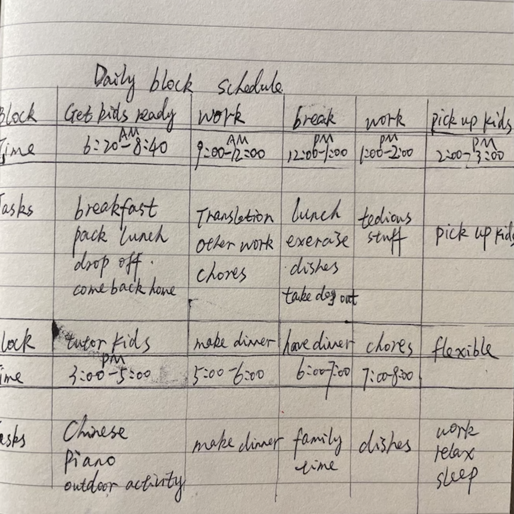

I arrange my workload at a weekly basis and flexibly put daily tasks in to a to-do-list. There is a software to help me manage my daily task so I will not miss any work, even the teeny weeny task that clients wants me to do.
Efficientcy

My daily life is highly structured and generally productive, under the condition that kids behave in school and at home.
Flexibility
I use Trados mainly to do my translation, which is a helpful tool.